<!DOCTYPE html>
<html lang="en">
<head>
<meta charset="UTF-8">
<title>rolex-sfond</title>

<style>
html, body {
  width: 100%;
  height: 100%;
  margin: 0;
}

body {
  background-size: cover;
  background-position: center;
  background-repeat: no-repeat;
  animation: bg 102s infinite;
}

<div class="gallery">
  
  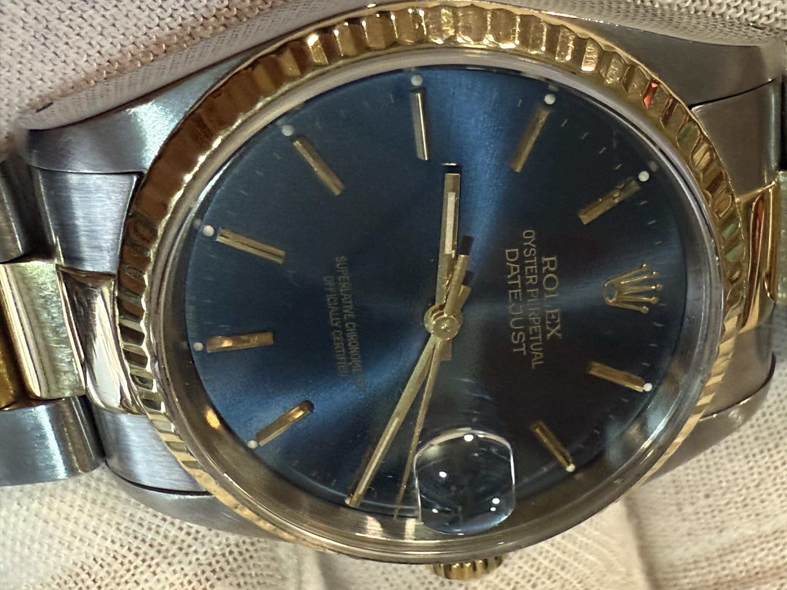
  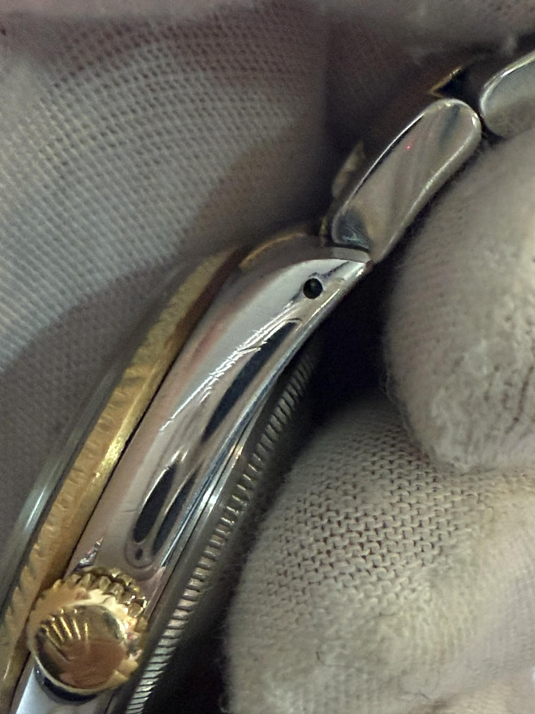
  
  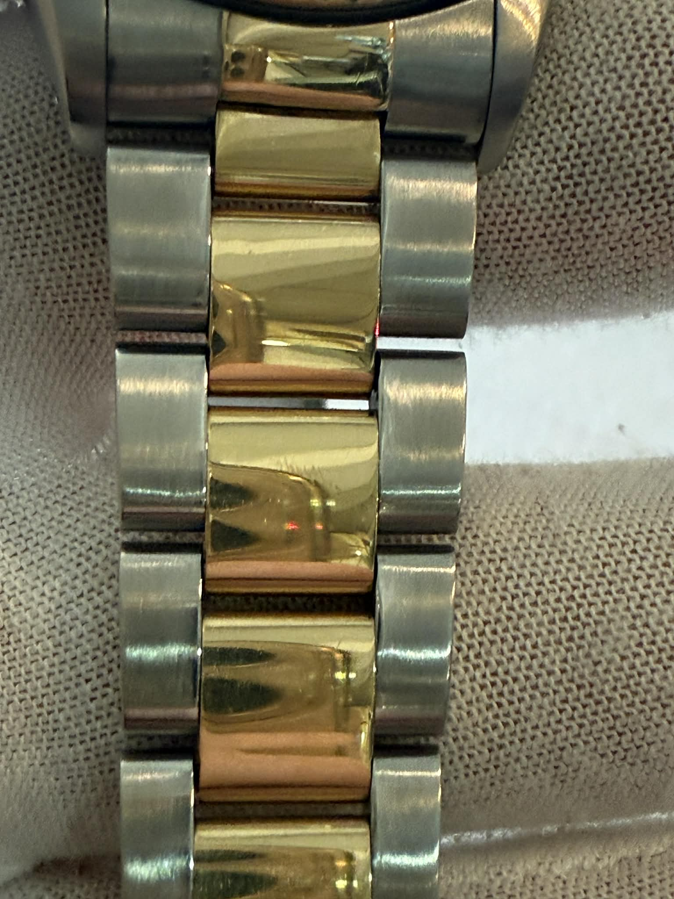
  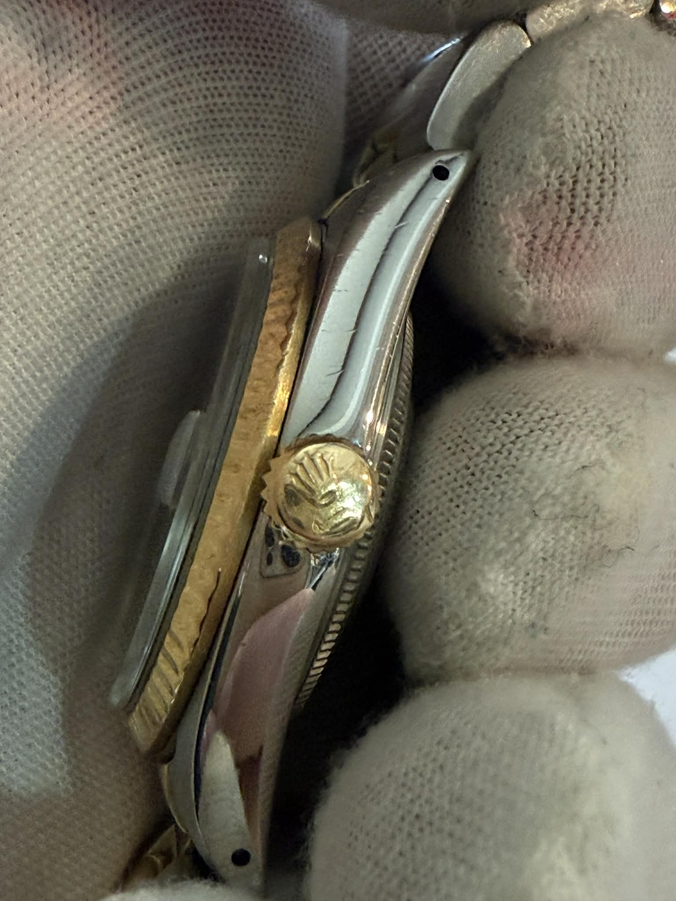
  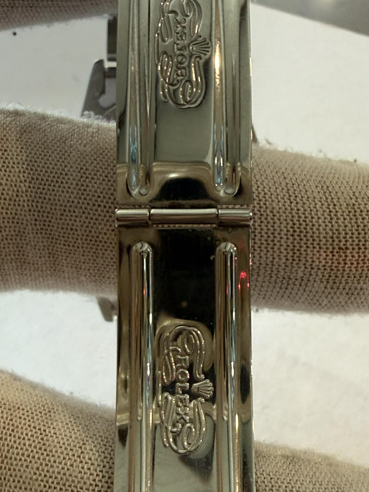
  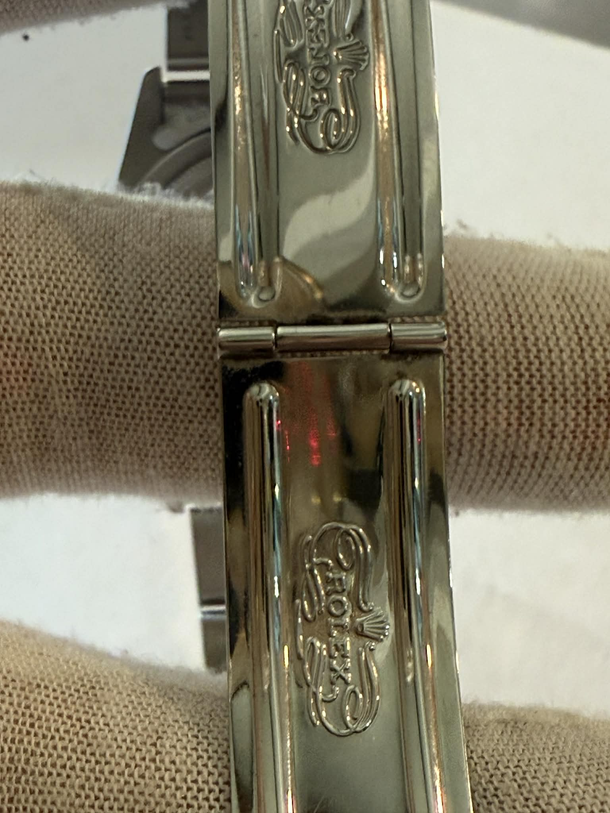
  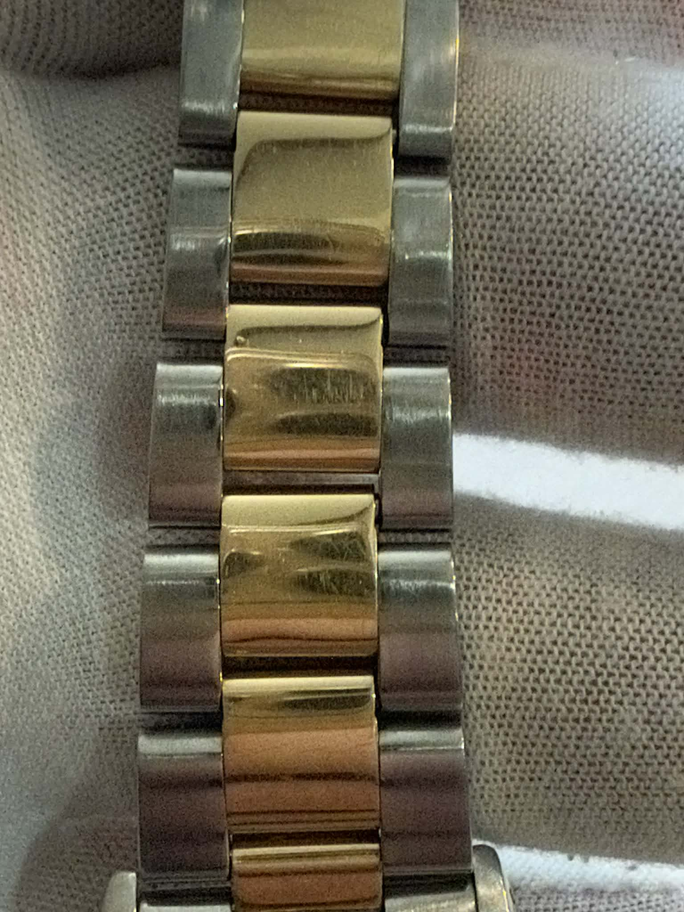
  
  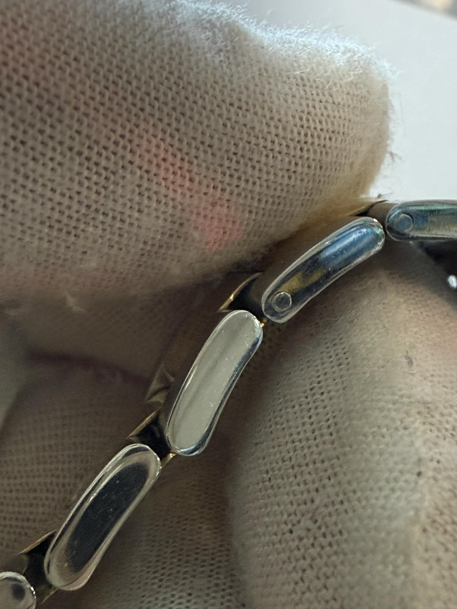
  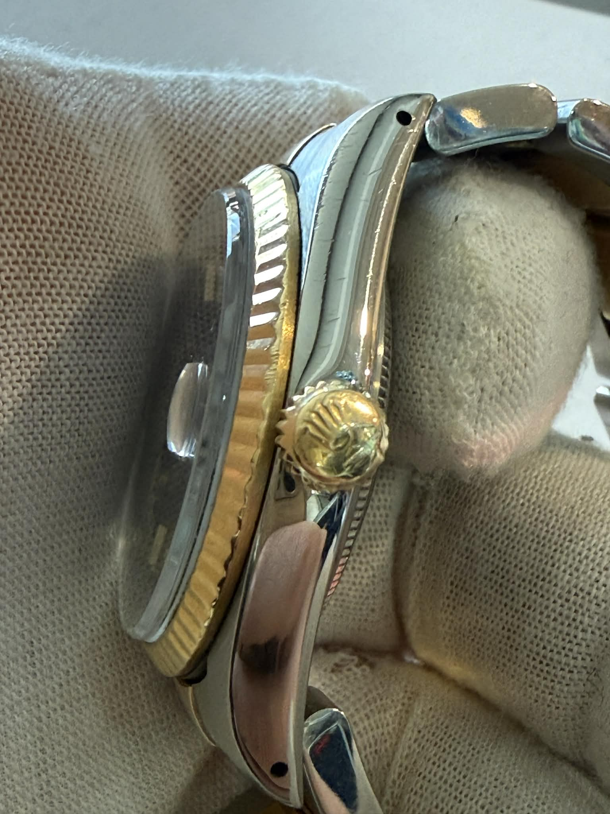
  
  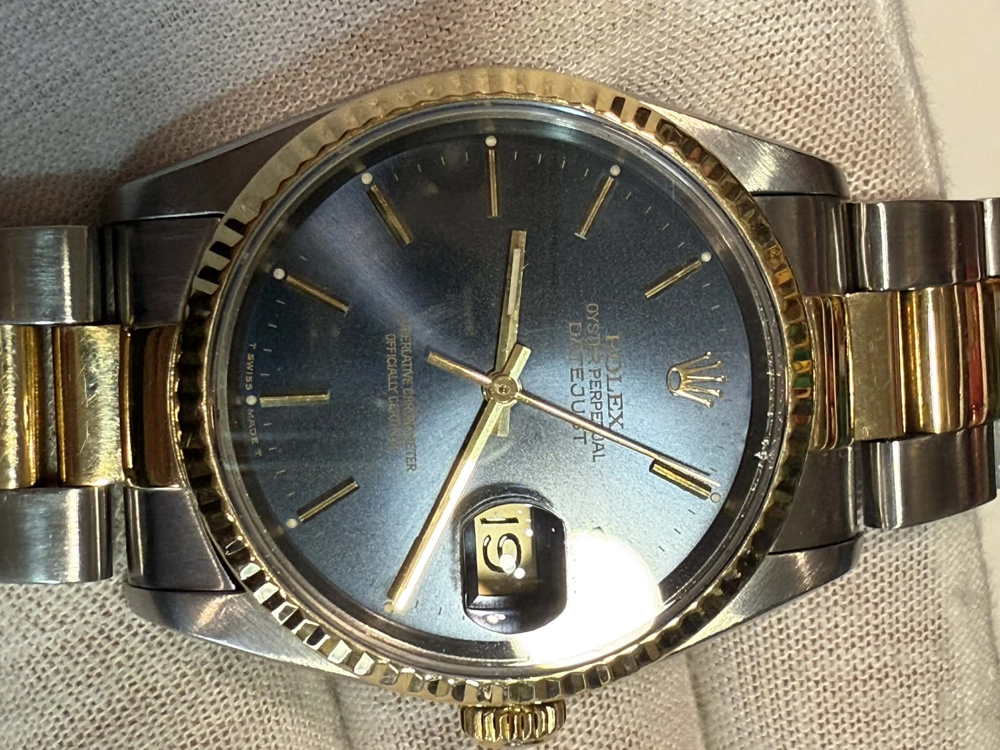
  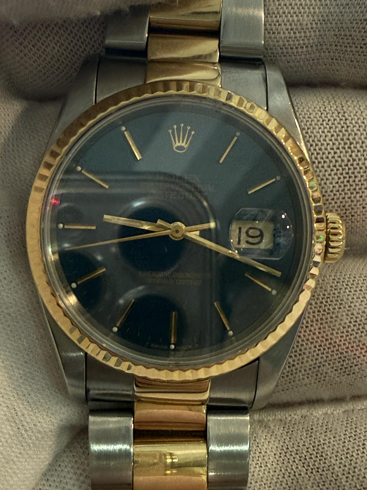
  
  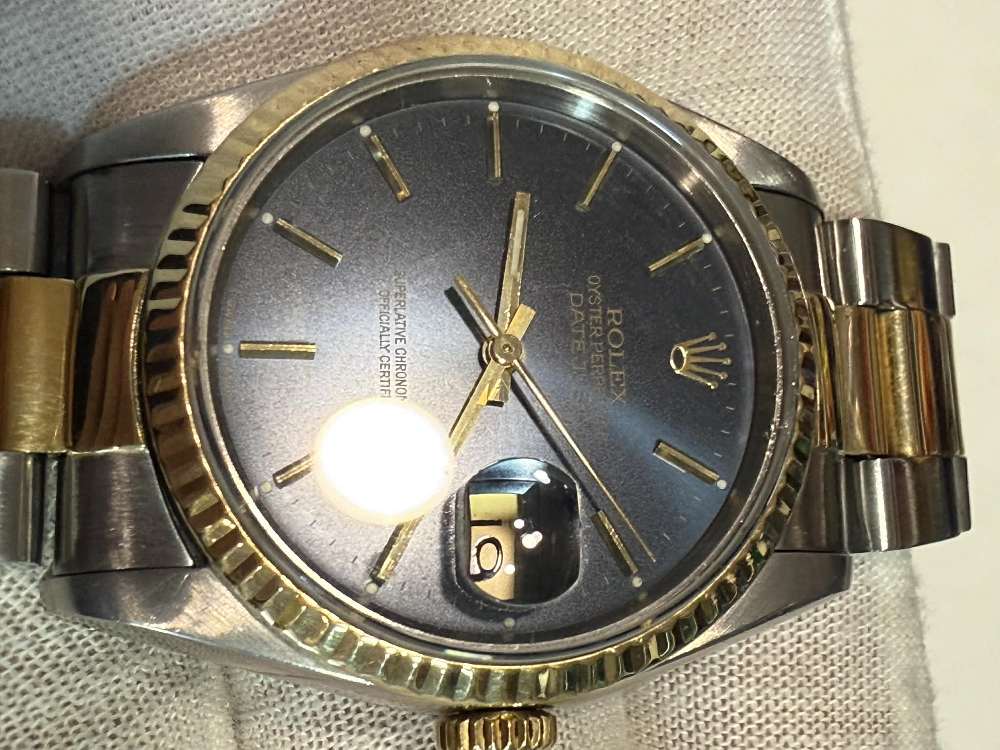
</div>


<div class="overlay" onclick="closeImg()">
  
</div>

    
    
<!-- Xhepi informacioni collapse -->
<div class="info-pocket-toggle" style="max-width:800px; margin:20px auto;">
  <button onclick="this.nextElementSibling.style.display = (this.nextElementSibling.style.display==='block')?'none':'block';" 
          style="width:100%; padding:12px; font-size:16px; border:none; background:#0070ba; color:white; border-radius:5px; cursor:pointer;">
    View Full Info
  </button>

</style>
</head>

<script>
function openImg(img) {
  document.getElementById("zoomImg").src = img.src;
  document.querySelector(".overlay").style.display = "flex";
}
function closeImg() {
  document.querySelector(".overlay").style.display = "none";
}
</script>
  
<body>
</body>
</html>


